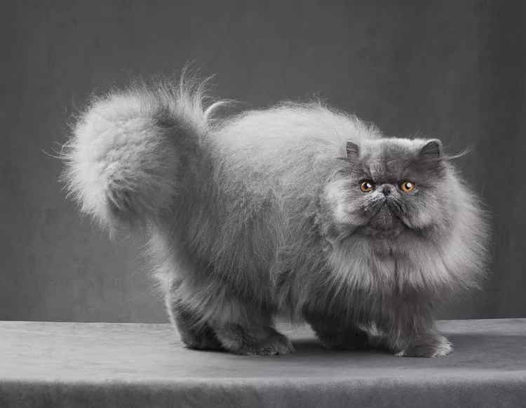

CATS AND FACTS
CLAW - Cute, Lovable, Awesome, and Wonderful!
Persian
Facts about Persian Cats
- The Persian cat has been cherished for hundreds—if not thousands—of years, tracing their origins to the deserts of Persia and Iran.
- The Persian cat is a medium- to large-sized breed, easily identifiable by their round, flat face and long, flowing coats that come in almost every color.
- Persian cats are gentle, loving companions even if their face makes them look a little grumpy.
Birman
Facts about Birman Cats
- The Birman cat is a sweet and affectionate companion with long, silky hair.
- Birmans are color-pointed, which means they have a light-colored body with darker “points†of color on the face, ears, legs, and tail.
- Regardless of color, all Birman cats should have four white paws and blue eyes.
Chartreux
Facts about Chartreux Cats
- The Chartreux cat is a French feline whose pleasant demeanor has made it the unofficial cat of France and a beloved pet abroad.
- The breed is notable for its solid blue-gray coat with a slightly woolly texture and bright copper eyes.
- The muscular and athletic Chartreux has small, fine-boned legs for the size of its body, and it can appear to be rather short in stature.
Himalayan
- Himalayans, also known as Himmies, are gentle giants of the cat world.
- Their beautiful long, silk coats come from their Persian relatives, while the pointed coloring on the ears, tail, face, and paws are thanks to their Siamese ancestry—along with their bright blue eyes.
- The Himalayan cat is a cross between the Persian and Siamese breeds.
Ragdoll

- This cat breed is one of the largest but don’t let the size intimidate you. Their big blue eyes and loud, throaty purr let you know they're just big softies. Ragdolls are notoriously social, making them a good fit for bustling homes with plenty of people and friendly pets.
- Ragdolls are ideal lap cats because they simply go limp with pleasure when they are being petted, giving them their name.
- The ragdoll is a large, affectionate cat that goes with the flow.